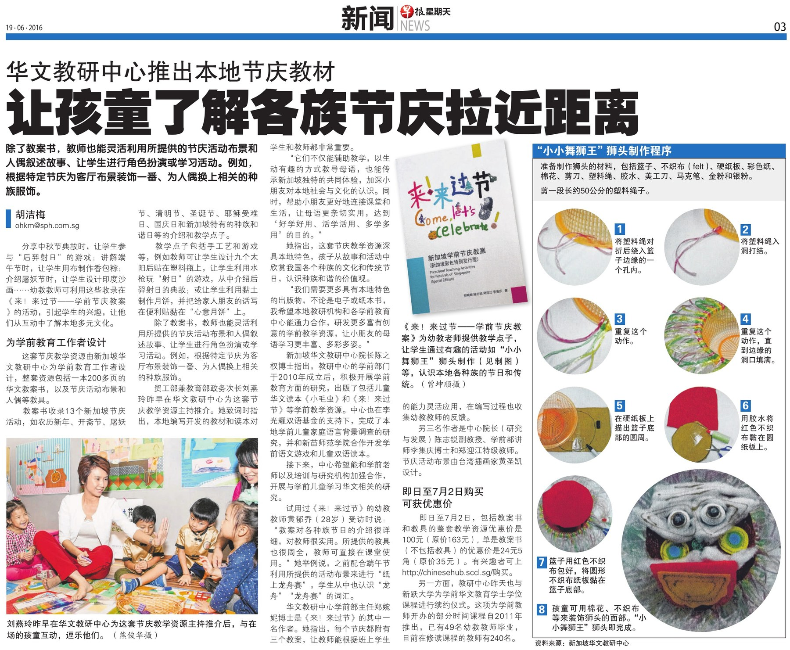
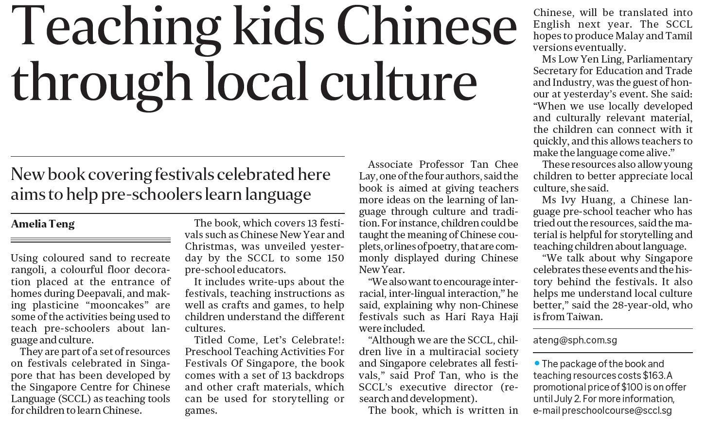
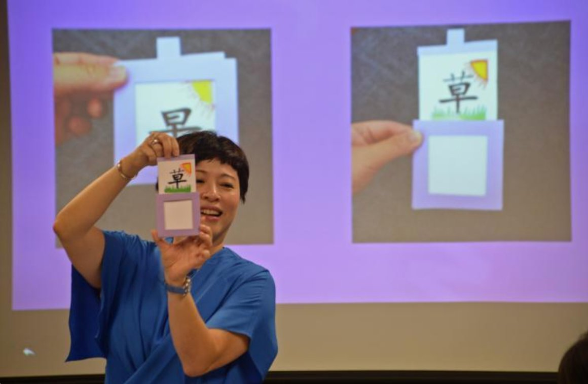
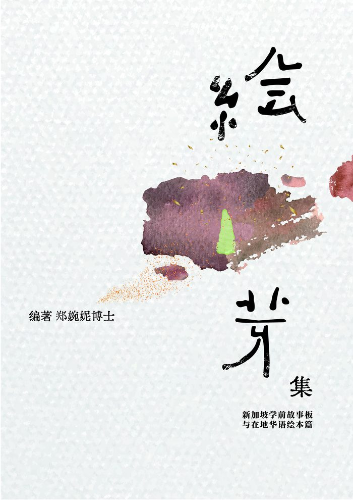
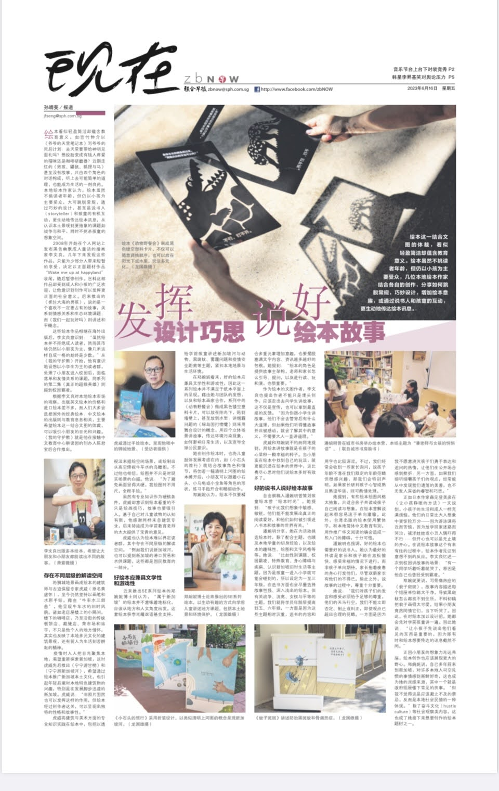
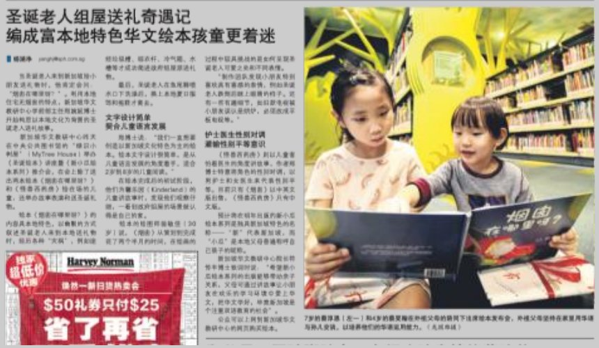

Child Development & Early Chinese Reading Specialist
Child Development & Early Chinese Reading Specialist, Singapore
Dean of Early Childhood Care and Education & Senior Lecturer, Singapore Centre for Chinese Language, Nanyang Technological University (NTU), Singapore
Starting from a picture book and extending into play, drama and the learning environment, so children come to read Chinese through their everyday life in Singapore. A children’s author and preschool Chinese teacher educator who has long championed localised preschool Chinese education in Singapore.

- 30years in early childhood education
- 30+books and textbooks
- 3books on National Library Board lists
- 19TV interviews
- 5National Preschool Teaching Aid Competitions
Signature expertise
Signature workEarly childhood educationEarly childhood education, birth to eight
Thirty years in early childhood education, grounded in child development from birth to eight: preschool curriculum and teaching, festival teaching and whole-centre events, teaching-aid design, case teaching and crisis management. First in Singapore to systematise preschool festival teaching, founder of the preschool Chinese teaching-aids competition, and a teacher educator in Taiwan and Singapore.
Chinese Reading and the Move to Primary SchoolChinese reading and the move from preschool to primary
She proposes the ‘reading ecosystem’: reading goes beyond teachers’ questions, extending from the picture book into child-led drama and play, board games and extension activities, and includes how teachers prepare the story corner and environment. Her focus is how reading flows naturally from preschool into lower primary, and she supports children, parents and teachers through the move from kindergarten to Primary 1.
Localising Chinese-language educationLocalising Chinese-language education
Many of Singapore’s preschool Chinese teachers come from overseas. Localisation is not about teaching a few local symbols; it is about understanding the life and values in HDB flats, the pasar and Singapore Mandarin, so the curriculum truly belongs to Singapore’s children.
Experience design and addictive design for childrenExperience design and addictive design for children
She studies children’s mobile games, media mix and pop culture, looking from child development at how products and games attract children — and how to protect them. She has advised game companies in Taiwan and Japan on children’s products.
Story-building and immersive storytelling designStory-building and immersive storytelling design
Dr Cheng’s strength in story lies not only in telling stories but in building them. With her “story nine-grid”, she guides teachers, parents and children to build a complete story step by step, turning narrative skill into a method that can be taught and practised; the same ability to shape content into story is what makes her talks so engaging. In Singapore she created Dr Cheng’s Storytelling and Play for Families, designing stories as live game scripts: every child in the room is not just a listener but steps into the story and moves the plot forward through play and drama.
Reading Ecosystem
Dr Cheng’s conceptual framework for reading in Singapore’s preschool Chinese-language classrooms: reading goes beyond teacher questioning; it is a whole experience built around the child and nourished by four elements.
- SoilGuided preparation: preparation before the telling, including story baskets, small objects, setting and language prompts.
- SunlightLanguage vehicles: static and dynamic children’s literature, including picture books, videos and game texts.
- WaterThe process of interactive reading: telling, play, questioning and comprehension.
- AirExtension activities: activities that sit quietly in the classroom environment, such as picture-book board games, assessment mini-games and small crafts.
Take away any one of the four and reading struggles to grow; the balance among them shifts with the child’s age.
Working paper: Cheng, W.-N. (2026). Reading ecosystem: A conceptual framework for Singapore preschool Chinese-language classrooms (Working paper v1; in Chinese). Zenodo. https://doi.org/10.5281/zenodo.24365878
About Dr Cheng
AboutDr Cheng Wan-ni is an early childhood education specialist grounded in child development from birth to eight, and Dean of Early Childhood Care and Education and Senior Lecturer at the Singapore Centre for Chinese Language (SCCL), Nanyang Technological University (NTU), Singapore. She has worked in early childhood education in Taiwan and Singapore for over thirty years and has taught nearly every course in early childhood teacher education.
She studied child welfare at both bachelor’s and master’s level, so she always approaches early education from children’s rights and wellbeing, with attention to families and to children who need extra support. She was a counsellor at a family education service centre in Taiwan, where she worked closely with children, teenagers and their families.
In Taiwan she served on curriculum planning, curriculum and practicum committees in early childhood programmes, gaining a full view of teacher preparation. Since 2015 she has worked in Singapore’s bilingual and Chinese-language early childhood education, and trains preschool organisations in China and other Chinese-speaking regions. She is also an essayist and children’s author: in her early years she wrote education commentaries and essays for Taiwan’s newspapers and magazines; her essay “Posted Abroad” won second place in the Cross-Strait Literature Documentary Award, and she published the short-prose collections Fen Ta and Love Goes to School. Since coming to Singapore she has published more than thirty picture books, teaching books and university textbooks.
- Current
- Dean of Early Childhood Care and Education (ECCE) / Senior Lecturer, Singapore Centre for Chinese Language (SCCL), Nanyang Technological University (NTU), Singapore
- Also
- Honorary Associate Professor, The Chinese University of Hong Kong; Adjunct Lecturer, Early Childhood Education at Singapore University of Social Sciences (SUSS)
- Education
- PhD, National Pingtung University of Education, Taiwan (2012)
Master in Child Welfare, Chinese Culture University, Taiwan (1996)
Bachelor of Youth and Child Welfare, Providence University, Taiwan (1994) - Formerly
- Assistant Professor, Department of Early Childhood Caring and Education, and Dean, Center of Child Development, Chung Hwa University of Medical Technology, Taiwan
Counsellor, Family Education Service Centre, Taiwan - In Taiwan
- Senior Lecturer, national training for Child Welfare Professional Educators, Childcare Providers (Babysitters), and Leadership and Management for Principals
Lecturer, The Core Early Childhood Caring and Education Professional Curriculum (MOE)
Drafter, Technological & Vocational Education Joint College Entrance Examinations: Child Welfare
Consultant, children’s games, cards and toys, International Games System Co., Ltd.
Consultant, infectious disease crisis management for Taiwan kindergartens - Advisory
- Chinese Advisory Panel member, National Library Board (2020–2024)
Consultant, Singapore Cute Animals picture-book series (Yun Shu Publishing, supported by the Lee Kuan Yew Fund for Bilingualism, 2024) - Awards
- Singapore Preschool Chinese Teaching Materials in Daily Life — shortlisted for the “Best Educational Book” category, Singapore Book Awards
Picture books selected for National Library Board reading lists: 100 Must-Read Singapore Books for Children under 12 (two titles), 120 Must-Read Picture Books before 9 (2025 edition) and the SG60 list of 60 recommended Singapore books
Cross-Strait Literature Documentary and Photography Award, Prose, Second place, Taiwan (2011), for the essay “Posted Abroad”
Expertise
Ages 0–3 · 3–6 · 6–8Early childhood curriculum and teaching
- Preschool curriculum design and integrationThematic, project and integrated curricula built on play and picture books
- Play-based and inquiry-based learningPurposeful play: from leading to supporting, so children construct knowledge through play
Show allShow less
- Teacher-child interaction and questioningQuality interactions that support active learning: question design, response techniques and facilitation
- Festival teaching and whole-centre eventsFirst in Singapore to systematise preschool festival teaching, from classroom lessons to whole-centre events
- Learning corners and environment planningPlanning story corners, learning corners and the classroom environment
Child development and learning
- Infant and toddler development and careAttachment, temperament and caregiving interactions from 0 to 3
- Values, social-emotional competencies and learning dispositionsEmotional regulation, relationships, resilience, and learning dispositions such as curiosity and perseverance
Show allShow less
- Decoding and responding to behaviourReading the needs behind behaviour, with the 3R and 3S strategies and responsive interaction
- Language development and early literacyLanguage acquisition, bilingual development and the literacy transition into lower primary
- Transition from preschool to primary schoolLearning readiness, adjusting to school life and social-emotional support from kindergarten to Primary 1, with parents and teachers working together
- Special needs and inclusive educationHighly sensitive children, dyslexia and differentiated support
Chinese teaching and children’s literature
- Teaching Chinese as a second language in preschool and lower primaryClassroom design for Chinese as a second language, for children who won’t speak, answer in single words or default to English
- Picture-book teaching and the reading ecosystemFrom preschool to lower primary, shared-reading questions, extension activities and the reading environment form a complete reading experience
Show allShow less
- Chinese reading and character learning in lower primaryChoosing bridging books and levelled readers, guiding children from picture books to text, and building independent reading habits
- Story-building and narrative skillsUsing the “story nine-grid” to teach teachers, parents and children to plan and tell a complete story
- Storytelling and dramaImmersive stories designed as live game scripts, with role play and People Game interaction, so every child steps into the story
- Children’s songs, children’s poetry and language gamesAdapting, writing and reciting children’s songs and poems, with movement and language games
- Children’s literature and picture-book creationAppreciating children’s literature and creating local picture books; the Three-Step Story Method takes teachers and pupils from their own stories to a finished picture book, and extends to story writing in lower primary
Child welfare and families
- Child welfare and children’s rightsTrained in child welfare (BA, MA), seeing early education through children’s wellbeing
- Family and parenting educationParenting, parent-child communication and family conflict
Show allShow less
- Shared reading and the home language environmentBuilding a Chinese-reading environment at home
- Communicating and working with parentsPositive communication and home-school partnership
- Child and family counsellingFormerly a counsellor at a family education service centre in Taiwan
Play, teaching aids and experience design for children
- Board-game design and game-based teachingPicture-book board games and teaching with board games, for kindergarten and lower primary, building language and social skills
- Teaching-aid design and teaching resourcesFounder of the preschool Chinese teaching-aids competition; every edition becomes a book
Show allShow less
- User-experience design for childrenProduct, game and activity design grounded in child development
- Addictive design and children’s popular cultureMobile games, media mix and children’s consumer culture
- Children’s product consultancyFormer consultant on children’s games, cards and toys for game companies in Taiwan and Japan
Teacher education and centre management
- Teacher-education curriculum and practicumPlanning early childhood programmes, supervising practicum and writing university textbooks
- Teachers’ professional growth and burnoutTeachers’ emotions, self-motivation and cross-cultural adaptation
Show allShow less
- Responsive teams and centre leadershipCollaboration among teachers, between Chinese and English teachers, and with leaders
- Curriculum evaluation and indicatorsEducational evaluation and building professional indicators
- Crisis and health management in preschoolsPhD thesis built kindergarten infectious-disease crisis-management indicators using the Delphi method
Milestones
Initiatives- 1997–2015
Eighteen years in Taiwan’s early childhood field: from curriculum to centre management
From 1997 she taught in the Department of Early Childhood Caring and Education at Chung Hwa University of Medical Technology, as Lecturer and then Assistant Professor, serving as Director of the Child Development Center (2001–2003) and Director of the Joint Admissions Service Centre (2013–2014). She helped build the department, convened its practicum and curriculum development committees, planned and founded the university’s affiliated kindergarten, and took part in Ministry of Education evaluations of technological and vocational institutions, while advising many kindergartens in Taiwan on management, curriculum and teacher development. She lectured in national training for child welfare professionals, childcare providers and principals, set papers for the joint college entrance examinations, and led research projects funded by the Ministry of Education and the Ministry of the Interior. These eighteen years across teacher education, centre consultancy, administration and research grounded her as a practitioner who joins theory with practice.
- 2015
Dean of Early Childhood Care and Education, SCCL, Nanyang Technological University
She joined the Singapore Centre for Chinese Language (SCCL), Nanyang Technological University (NTU), as Dean of Early Childhood Care and Education and Senior Lecturer, leading curriculum innovation, teacher professional development and research in preschool Chinese education. Facing a different language policy and preschool system, she re-examined her Taiwan expertise in the Singapore context and began researching the cross-cultural adaptation of preschool Chinese teachers — the starting point of her work on localising preschool Chinese education.
- 2016
Proposed the localisation induction course for new preschool Chinese teachers
Wrote and proposed the programme to ECDA, bringing ‘cultural adaptation’ into Singapore’s preschool Chinese teacher training for the first time.
- Since 2016
Systematising festival teaching
Beginning with Come, Let’s Celebrate!, she wrote preschool lesson plans, assessments and teaching resources for the festivals of Singapore’s communities — the first systematic approach to preschool festival teaching in Singapore — and extended it from classroom lessons to whole-centre event planning.

June 2016: Launch of Come, Let’s Celebrate! Preschool Teaching Activities and Resources for Festivals of Singapore, graced by Ms Low Yen Ling, Parliamentary Secretary, Ministry of Education and Ministry of Trade and Industry (photo: Singapore Centre for Chinese Language) Press coverage at the time (click to enlarge)

Lianhe Zaobao, 2016.06.19: Helping Children Understand the Festivals of Every Community — names Dr Cheng Wan-ni as one of the authors of Come, Let’s Celebrate! 
The Straits Times, 2016.06.19: Teaching kids Chinese through local culture - Since 2018
Organising Singapore’s First Teaching Aids Competition Conducted in Mandarin
A theme each edition: everyday materials, board games, storyboards, local Chinese picture books, and picture books × board games. Every edition becomes a book, building a local library of teaching resources. The competition gives teachers a fair platform: every kindergarten may take part with an equal chance of winning, and every final judging panel has been drawn from Singapore’s early childhood academic institutions, libraries and relevant experts not employed by any preschool operator.

2018.03 — First preschool Chinese teaching-aids competition: Dr Cheng demonstrates a playful way to teach characters (photo: Lianhe Zaobao; click for the report) 
2018.09 At the first competition’s teaching-aids exhibition, Dr Cheng shows the entries to then Minister for Education Ong Ye Kung (left) and Senior Parliamentary Secretary for Education Low Yen Ling (right) Each competition becomes a book

Wan Wu Zhi — everyday materials 
Tong Xin Shuo — creative board games 
Budding Stories — storyboards and local picture books 
Zhi Qu Lu — picture books × board games - Since 2019
Deepening localisation through original picture books
Starting with Where’s the Chimney, she has published a Christmas picture book set in Singapore every year, and leads The Singapore Kid’s Picture Book Series and The 5E Project supported by the Lee Kuan Yew Fund for Bilingualism, bringing HDB flats, the red headscarf and Singapore Mandarin into children’s reading. Several titles are on National Library Board reading lists.
Press coverage (click to enlarge)

Lianhe Zaobao zbNOW, 2023.06.16, ‘Clever design for telling picture-book stories well’ 
Lianhe Zaobao, 2019.12, ‘Santa’s HDB gift-giving adventure becomes a local Chinese picture book that children love’ - Ongoing
Following policy, giving expert advice
She closely follows the development of Singapore’s early childhood and mother tongue policies, including ECDA’s curriculum frameworks and inclusive-education policy, and turns them into teacher training, curriculum and materials. She served on the National Library Board’s Chinese advisory committee (2020–2024) and is regularly consulted by government agencies, publishers and the media on early childhood education and Chinese learning.
- Ongoing
Building a degree programme, writing without pause
She helped build the curriculum framework of the SUSS Bachelor of Early Childhood and Chinese Language Education (BECCE) and oversees the courses SCCL delivers in it, reviewing and revising every set of course materials. She wrote the university textbooks on children’s literature, social-emotional development, and multicultural and bilingual education, and a fully rewritten Supporting Children with Special Needs arrives in 2027. In ten years she has published more than thirty picture books, teaching books and university textbooks.
- Ongoing
Into the community
She leads the Zheng Xiaogua Story Troupe into libraries, schools and communities with Dr Cheng’s Storytelling and Play for Families, designed on the reading-ecosystem approach, and runs pro bono workshops for families with fewer resources, using picture books, storytelling and language play with children and parents.

On the scene: Lianhe Zaobao, 2024.09, on the Little Thumbs Mid-Autumn celebration, where a comic “goose” and Chang’e kept the children laughing - Ongoing
Inviting experts from around the world for diverse perspectives
She continually invites experts and scholars in Chinese-language early childhood education from around the world to Singapore to share and exchange ideas, bringing fresh perspectives to local early childhood education. Dr Cheng values diversity of academic views and guards against sameness, so that preschool Chinese education in Singapore keeps growing through dialogue and debate.
- Since 2025
Deepening and spreading the reading ecosystem
Turning years of practice with picture books, storytelling performances and extension activities into a system, the “reading ecosystem”: with picture books at the centre, reading experiences unfold around the child, from the story setting and the teacher’s telling to extension activities and the learning environment. Extending from preschool into the early primary years, it moves towards all-round, pressure-free, deep learning of Chinese.
- Since 2026
Advocating and supporting tailored, in-depth training for centres
Dr Cheng advocates that teachers’ professional development should return to the real needs of each centre and be led by people with professional expertise, approaching it through professional observation and theory rather than settling for peer sharing or repeated in-house talks, so that training hours truly become professional growth. Many kindergartens and large preschool groups have been willing to invest in this, so she goes into each centre to interview and observe, pins down the difficulties its teachers face, and then designs the training around the needs of the organisation, its teachers and current policy. Each session runs five to seven hours of thorough, in-depth work with the centre, joining practice with theory so that teachers are immersed in hands-on work and learn from one another. She is also committed to fairness in professional growth, offering a platform for professional development that every teacher can join, whatever their status.
Books
BooksFor the courses SCCL delivers in the SUSS Bachelor of Early Childhood and Chinese Language Education (BECCE), every set of course materials has been supervised, reviewed and revised by Dr Cheng.
Talks & Media
Talks & media
Keynotes
- Reimagining Santa Claus in a Tropical Asian City: Cultural Codes of Childhood in Singapore Picture Books — International Scientific and Practical Conference ‘The Child in the World of Culture: Values and Meanings’, Southern Federal University, Russia (invited, online)
- Child Culture Design × 5E Framework: A Reading Universe that Supports Child Agency — ‘Let Children Become the Sun’ International Conference on New Early Childhood Education, Soochow University (keynote)
- Contemplating the Roots of Story, Walking the Path of Culture: Local Picture Books and the Imagination of Preschool Chinese Education in Singapore — 2025 Singapore Early Childhood Education Chinese Symposium (SUSS)
- Let’s Start with the Chimney: The Journey of Creating Singapore’s Localised Picture Books — The 15th Asian Festival of Children’s Content (AFCC)
- Authoring Picture Books: An Insight on Literary Creation in Singapore’s Localised Context — The 7th International Conference on Teaching and Learning of Chinese as a Second Language (TLCSL)
- Picture Books in Our Hearts: The Components of Child Development in Picture Book Creation — Asian Festival of Children’s Content (AFCC)
- Post-Pandemic Kindergarten Classrooms: Impacts, Adaptations, and Transformation; Game Changes During the Pandemic: A New Chapter for Board Games — The 6th International Conference on Teaching and Learning of Chinese as a Second Language (TLCSL)
- An Exploration of Cross-Cultural Adaptation of Chinese Language Preschool Teachers in Singapore — The 5th International Conference on Teaching and Learning of Chinese as a Second Language (TLCSL)
- The Singapore Chinese-Language Workplace and Teachers’ Cross-Cultural Adaptation — Programme for Overseas Markets of the Chinese-Language Education Industry (Taipei)
- Back to the Roots: The Development of Early Childhood Education in Singapore — 2017 Centennial Early Childhood Education Forum and International Conference (Kaohsiung)
- Digital Technology and Children — 2016 Centennial Early Childhood Education Forum (Kaohsiung)
Dr Cheng’s Storytelling and Play for Families
- I Want to Go Too! book launch and immersive family story party (Central Public Library)
- Special guest, Nanyang Primary School Reading Carnival “Fairy Tale Night: A Christmas Adventure”: Step into Fairy Tales, Play with Reading, Adventure Together
- I Want My Farty Reindeer! book launch and immersive family story party (Central Public Library, co-performed with storyteller Victor Lu)
- CDAC Family Reading Carnival: led a teacher team in bilingual story performances for about 200 families
- Oh Dear! Santa’s Reindeers Need a Break Christmas book launch and story performance
- CDAC Chinese Reading Carnival: led a teacher team reading her original picture books (Lianhe Zaobao)
- Thumbs Up Little Junior Mid-Autumn family workshop: the ‘Long Goose’ and Chang’e story performance (Lianhe Zaobao)
- The Mysterious Christmas Gift Christmas book launch and story performance
- Santa Wants to Get Fat Christmas book launch and story performance
- Santa’s Red Headscarf Christmas book launch and story performance
- Santa’s Flip-flops Christmas book launch and story performance
- Where’s the Chimney Christmas book launch and story performance
Strategic partner
Conferences
- The Magical Cohesive Power of Props in Picture Books — ECDA Early Childhood Conference 2021
- Play with Light and Dark: Indoor and Outdoor Light and Shadow Activities — ECDA Early Childhood Conference 2019
- Run Jump Bump — Learning Mandarin is Fun: Play that Integrates Language and Motor Skills Development — ECDA Early Childhood Conference 2018
- A Case Study on Chinese Preschoolers’ Early Writing Development of Chinese Characters in Singapore (with Zheng Yingjiang and Tse Shek Kam) — The 8th International Conference on Chinese Characters and Character Education (Tokyo)
- Conceptualising Teaching Activities: Reflections on the Design of Singapore Preschool Festival Materials (with Tan Chee Lay, Chen Sihui and Jessie Soh) — Early Childhood Education Conference 2016, SIM University
- Unlock Limitless Imagination Using Backdrops — Early Childhood Education Conference 2016, SIM University
- Children’s Popular Culture in the New Media Era — 2016 Centennial Early Childhood Education Forum (Kaohsiung)
- Multiple Language Presence: Children’s Language and Emotion through New Media and Their Implications for Chinese Language Education — The 4th International Conference on the Teaching and Learning of Chinese as a Second Language
- The Profile of Child Play in the New Era and New Media: The Qualitative Change — 65th OMEP World Assembly and Congress (Shanghai)
- Media Mix, New Media, and Changes of Children’s Play — New Media and Cultural Transformation: Film, TV, Game, and Digital Communication (Shanghai University School of Film and TV Arts & Technology and NYU Shanghai)
- Real Life: Early Childhood Students Where Theory Meets Practice — 2010 Early Childhood Care Conference: Management and Development of Care Institutions amid Declining Birth Rates (Tainan)
- New Thinking for Caregivers in a Low-Birth-Rate Society — 2010 Early Childhood Care Conference (Tainan)
- A Cultural Observation of Children’s Leisure: Weekend Dinosaur Cards — Cross-Strait Conference on Sport and Leisure Industry Management (Chienkuo Technology University)
- Understanding Children’s Trading Card Games — Conference on Travel, Health and Leisure (National Taipei University of Nursing and Health Sciences)
- Children’s Books in the Closet: Analysing a Picture Book on Same-Sex Families, Is Your Family Like Mine — Conference on Professional Development in Early Childhood Care (Tainan)
- 2003 Survey of Children’s Living Conditions and Welfare Needs in Tainan — Tainan City Conference on Child and Youth Welfare Resources
- A Study of the Stability of Children’s Social Status — International Conference on Cross-Century Perspectives (Tainan Woman’s College of Arts and Technology)
Articles, essays and prose
- “Reading ecosystem: A conceptual framework for Singapore preschool Chinese-language classrooms” (working paper v1, in Chinese), Zenodo
- Props in Picture Books: The Super-Magical World of Tatsuya Miyanishi, SUSS preschool newsletter Xin You Yue Bao, Issue 2, featured expert article
- Wu Yung-Sen and Cheng Wan-ni, Building Dreams Abroad: Learning Landscapes in Singapore Kindergarten, Taiwan Educational Review Monthly 9(12), 39–42
- Short-prose collection Love Goes to School (Tainan: Output)
- Short-prose collection Fen Ta (Tainan: Output)
- Essay “Posted Abroad”, second place (prose), Cross-Strait Literature Documentary Award
- Becoming an Excellent Infant Caregiver, in Introduction to Infant and Toddler Care (Taipei: Qunying)
- Over ten columns in Early Childhood Education Information on localised early education, crisis management in care centres, the early childhood workforce and gender diversity in children’s books
- Education commentaries in the Liberty Times and Taiwan Times; led and released Tainan’s Children’s Distress Index survey
Invited talks
- Uncle Feng You book launch, in conversation with Assoc Prof Tan Chee Lay, NIE, NTU — Grassroots Book Room
- Decode and Respond: A Practical Guide to Positive Interaction with Young Children — Early childhood training, Shaoxing, Zhejiang (95 educators)
- How to Teach the Heart with Heart — XiYao Chinese Lecture
- From Cross-Cultural to Localised: Exploring the Indigenous Educational Journey through Teaching, Curriculum and Textbooks — Exchange Lecture, Northwest Normal University and National Institute of Education
- Positive Communication in Kindergarten — PCF Learning Fiesta 2023
- Play and Learn: Versatile Educational Tools for Children — Singapore Book Fair
- Tips for Choosing Picture Books for Your Child — Singapore Book Council (SBC)
- Becoming a Preschool Chinese Teacher in Singapore — Shu-Te University, Taiwan
- Creating Stories with Local Contexts; How Animated Ebooks Could Help Children Learn their Mother Tongue Better: Evidence from an Eye-tracking Study — Asian Festival of Children’s Content (AFCC)
- Children’s Words, Children’s Books: Picture Books Across a Life — Tertiary Reading Festival
- Burnout and Self-Motivation for Preschool Teachers — PCF South East District teachers’ sharing conference
- Picture-book reading and child development; picture books and classroom display; conversation and extension activities — Thumbs Up Little Junior sharing session for preschool teachers (Suntec)
Mother Tongue Language (MTL) Symposium
- Learning Mandarin at Home: How to Use Props, Scenes and Games to Learn Your Mother Tongue — MTL Symposium 2023
- Run, Jump, Bump: Learning Mandarin through Physical Rhythm and Interactive Games — MTL Symposium 2019
- Come, Let’s Read: Creating a Conducive Home Environment for Parent-Child Reading in Chinese — MTL Symposium 2017
- A Nurturing Environment for Children to Learn Chinese — MTL Symposium 2016
Press
- Lianhe Zaobao, ‘Desmond Lee: Chinese teachers must use technology to make learning lively, but AI can never replace teachers’ (launch of Hui Ya Ji)
- The Straits Times: Confusing ‘mum’ for ‘horse’: New book helps Chinese language teachers tackle common errors by pupils
- 8world: Turning Chinese picture books into board games — four-teacher team wins award
- 8world, ‘SCCL launches new picture book I Want My Bum Reindeer’
- 8world: CDAC and CPCLL hold the CDAC Family Reading Carnival
- Lianhe Zaobao: SCCL bids farewell to its Ghim Moh Road campus, with the Centre’s Director, Programme Director and Dean of Early Childhood Care and Education Dr Cheng Wan-ni interviewed together
- Lianhe Zaobao: Adding Dramatic ‘Sound Effects’ Makes Parent-Child Reading More Fun (interview)
- Kinderland: SCCL Launches New Children’s Book to Foster Bilingual Reading
- 8world: SCCL launches new Christmas picture book Oh Dear! Santa’s Reindeers Need a Break
- Lianhe Zaobao, ‘Xiao Xiao Mu Zhi celebrates Mid-Autumn: parent-child workshop helps children learn about traditional festivals’
- Thumbs Up Little Junior and SCCL hold a Mid-Autumn family workshop
- Lianhe Zaobao: SCCL picture book teaches children to understand ‘love’ through everyday moments
- 8world: SCCL launches new children’s picture book What is Love?
- Lianhe Zaobao: Preschool teaching-aids competition — teachers’ local picture book takes top prize
- 8world: Preschool Chinese teaching-aids competition ends; Woodlands preschool entry wins
- Lianhe Zaobao: Christmas picture book builds empathy and thanks service workers
- 8world: SCCL launches new picture book The Mysterious Christmas Gift
- Lianhe Zaobao: Clever design for telling picture-book stories well
- Lianhe Zaobao: Innovative picture books spark children’s imagination and love of reading
- 8world: SCCL launches the 5E picture-book series, a different reading experience for young children
- 8world: SCCL launches its new picture book Santa Wants to Get Fat
- Lianhe Zaobao: Thumbs Up Little Junior family workshop — making teaching aids sparks children’s interest
- Lianhe Zaobao: Thumbs Up Little Junior family workshop — using teaching aids to spark interest and curiosity
- 8world: Launch of Come, Let’s Play Board Games with a board-game showdown
- Lianhe Wanbao: Preschool education expert — 13-month-olds are not ready for language lessons
- 8world: Preschool teaching-aids competition — The Otters Move House takes top prize
- Lianhe Zaobao: Santa’s HDB gift-giving adventure becomes a local Chinese picture book children love
- 8world: SCCL’s new book of creative teaching aids promotes Chinese learning
- Lianhe Zaobao: SCCL holds a board-game design competition
- Lianhe Zaobao: Preschool educators make Chinese teaching aids from everyday items
- Lianhe Zaobao Sunday: Thumbs Up Little Junior publishes its 100th issue with over 100 young fans
- Lianhe Zaobao: Preschool Chinese teaching-aids competition puts everyday materials to use
- Lianhe Zaobao: Early childhood scholar Cheng Wan-ni — the right picture books help children grow in confidence
- Lianhe Zaobao: Preschool education expert — picture books widen children’s inner world
- Lianhe Wanbao: SCCL Launches Local Festival Teaching Materials (clipping)
- Shin Min Daily News: New materials help children learn about local festivals
- Lianhe Zaobao: SCCL Launches Local Festival Teaching Materials — Helping Children Understand the Festivals of Every Community
- The Straits Times: Teaching kids Chinese through local culture
- United Daily News (Taiwan): Writing her own story — ‘Posted Abroad’ wins an award
- Taiwan press: Lecturer Cheng Wan-ni wins literary award
- Taiwan press: Teacher’s ‘Posted Abroad’ wins award
TV interviews
- Channel 8, Hello Singapore: Does more traffic mean more credible? Seeing through influencer content
- Channel 8, Hello Singapore: Does parents’ fear of losing out fuel the tuition culture?
- Channel 8, Hello Singapore: Children and harmful online content — who is responsible?
- Channel 8, Hello Singapore · Ten-Minute Interview: Building reading habits early
- Channel 8, Frontline Talk: When children misbehave, should parents be punished?
- Channel 8, Hello Singapore · Ten-Minute Interview: When homes became ‘childcare centres’ during the circuit breaker
- Channel 8, Frontline: Will the next generation still speak Mandarin? (Part 1, Part 2)
- Channel 8, My Home in Singapore: A Taiwanese educator ‘hooked’ on teaching
Since 2016 she has appeared in 19 episodes of Channel 8 programmes such as Hello Singapore and Frontline; the list above is a selection.
Radio & video
- 158Capital 958 episodes
episodes of the ‘Preschool Teachers’ Lounge’ programme - 124,355+YouTube
total views - 75,429views for the top episode
Frontline - 19Channel 8
TV interviews
Selected videos by theme — click to watch.
Parenting and family
- How family conflict affects children
- A happy parent’s guide: accepting your child’s imperfections
- Building resilience
Chinese learning and reading
- How to build children’s interest in learning Chinese
- How to increase young children’s engagement
- Bringing children into the wonderful world of picture books
Picture-book board games and teaching aids
A regular guest on Capital 958, Channel 8’s Hello Singapore and 96.3 Hao FM.Watch all 158 episodes → the Preschool Teachers’ Lounge YouTube channel
Follow the latest activities
Book launches, storytelling, training and talks — highlights are posted here.
 XiaohongshuSCCL Preschool CPD Lounge
XiaohongshuSCCL Preschool CPD Lounge
 Instagram@cpdroom_ecced_singapore
Instagram@cpdroom_ecced_singapore
Work with Dr Cheng
Work with Dr ChengPreschools, schools, libraries, community organisations, companies and foundations in Singapore and overseas are welcome to get in touch; content and format can be planned around your needs. You can also get to know Dr Cheng’s teaching through her online courses first.
Customised training for preschools
Training planned around the real needs of your centre.
ForChinese-language teaching teams at kindergartens, childcare centres and preschool operators
- Before training: centre interviews and visits, and teacher interviews, to pin down the teaching difficulties teachers face
- A training script written for your needs, with group games that lead teachers into hands-on practice
- A teaching toolkit ready for use in the classroom
FormatHalf-day or full-day workshops, or a training series; feedback has consistently been at or near full marks
Book a training for your centre →Talks and lectures
Research and field experience combined into ideas audiences can take back into practice.
ForConference and forum organisers, schools, teacher groups, parent associations, libraries
TopicsSpanning child development, parenting, curriculum and teaching, Chinese reading and centre management, with particular strength in parenting topics; titles can be planned with the organiser
FormatKeynotes, invited talks, teacher workshops, parent talks
Invite Dr Cheng to speak →Zheng Xiaogua Story Troupe
Dr Cheng’s Storytelling and Play for Families
Built on her reading-ecosystem approach, Dr Cheng brings her storytelling troupe to your event, where adults and children listen, speak, read and play together.
ForFamily events at libraries, primary schools, preschools and in the community; book launches; festival celebrations
AudiencePreschool to lower-primary children and their parents; larger sessions have hosted around 200 families
- Dr Cheng created Dr Cheng’s Storytelling and Play for Families in Singapore: stories designed as live game scripts, where every child steps into the story and moves the plot forward through play and drama
- Optional demonstrations of guided and shared reading, so reading continues after the event
- Content arranged around your theme, a festival or a new book
Strategic partner
Picture-book publishing partnerships
A picture book that carries your organisation’s message — with full collaboration from first idea to launch.
ForCompanies, foundations, government agencies and publishers
Collaboration case What is Love? was sponsored by a local business; 1,250 copies went to preschool operators, CDAC and the National Library Board, and it was launched by Ms Sun Xueling, Minister of State for Social and Family Development and Home Affairs.
Collaboration case The 5E picture-book series, six titles, was published with support from the Lee Kuan Yew Fund for Bilingualism; Ms Ho Peng, Chairman of the Singapore Centre for Chinese Language and former Director-General of Education, was guest of honour at its launch in May 2023.


Online courses
Teachers and parents can learn online, at their own pace.
 Watch the trailer ↗
Watch the trailer ↗
LiveChildren Don’t Mean It: Decoding and Responding to Behaviour in the Preschool Classroom (in Chinese)
Read the needs behind children’s behaviour and practise the 3R response and 3S guidance strategies through real cases, including common Chinese-class challenges such as children who won’t speak, answer in single words or default to English. Comes with observation sheets, case analyses, practice cards and a response phrase bank; about 1 hour 30 minutes.
ForPreschool Chinese teachers, early childhood educators, parents and caregivers
Course details and free preview (PressPlay) →Launching 2026.12Becoming a Preschool Teacher in Singapore (in Chinese)
For those planning to teach preschool Chinese in Singapore: types of preschools, curriculum frameworks, festivals and centre events, and professional development, with a toolkit.
Contact
ContactSchools, libraries, preschool organisations and academic institutions in Singapore and overseas, including China, Taiwan and Hong Kong, are welcome to invite Dr Cheng for talks, workshops or collaborations.
Email: drchengwanni@gmail.com

SCCL Preschool CPD Lounge
WeChat ID: ECCEDCPD